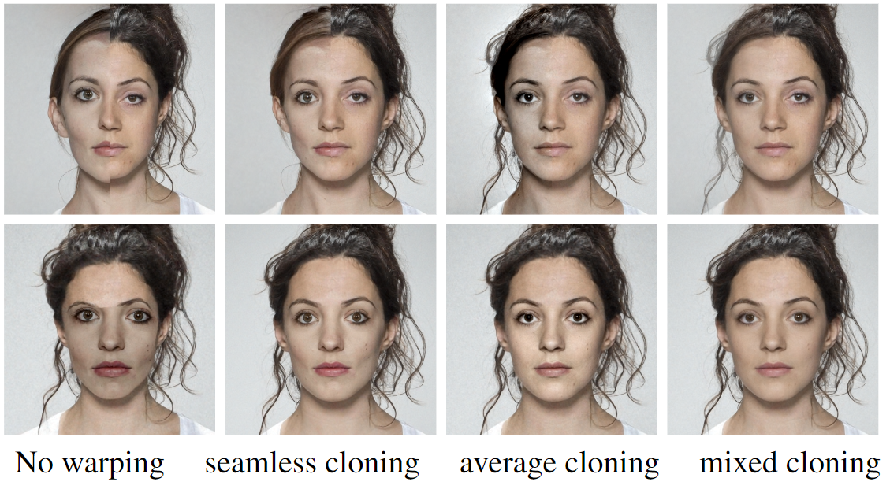
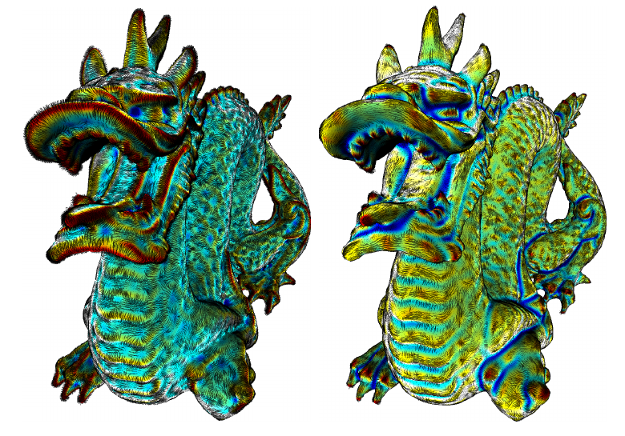
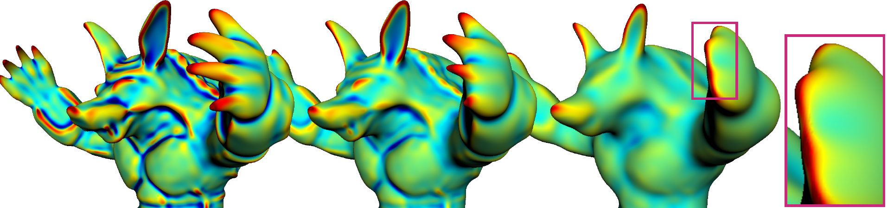
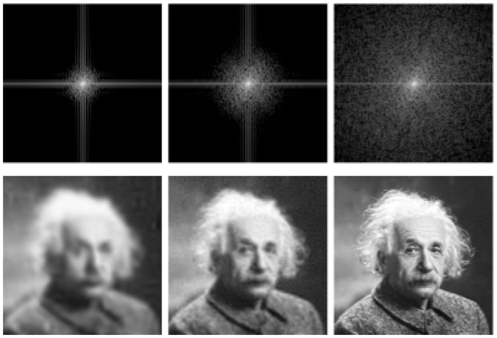

Guilherme G. Schardong

I'm currently a Research Scientist at Institute of Systems and Robotics, University of Coimbra, where I work on projects with the Visual Information Security Team (VISTEAM). Up to January 2022, I was a research fellow at GALGOS/PUC-Rio, with experience on oil&gas industry from projects with PETROBRAS on well-testing and reservoir model inference. I'm also a part-time post-doc at Visgraf/IMPA, where I work on computer graphics and machine learning, with emphasis on implicit function reconstruction and rendering.
Background
I got my Bachelor's degree in Computer Science from UFSM in 2012 and a Master's degree in Informatics in the same university, in 2014, advised by prof. Cesar Pozzer. In 2018 I got my D.Sc. in Informatics at PUC-Rio, as a member of GALGOS. From 2014 to 2016 I worked as a developer under prof. Waldemar Celes on the Reservoir Visualization group on Tecgraf/PUC-Rio Institute. In 2016 I started working with prof. Hélio Lopes (being advised by him since 2015) and was co-advised by prof. Simone Barbosa during my doctorate. I'm currently a post-doctoral fellow at the Institute for Systems an Robotics, University of Coimbra at the VISTEAM group, led by prof Nuno Gonçalves. I'm also a part-time post-doc collaborator, supervised by prof. Luiz Velho from Visgraf/IMPA and prof. Hélio Lopes.
Research
My current research interests involve mainly AI for Graphics and Implicit Neural representations. Below is a selected list of projects and publications from the last 5 years.
Neural Implicit Morphing of Face Images [Project page] [Code repository] [Paper Link] [ArXiv Link]

Authors: Guilherme Schardong, Tiago Novello, Hallison Paz, Iurii Medvedev, Vinícius da Silva, Luiz Velho, Nuno Gonçalves
Venue: 2024 IEEE/CVF Conference on Computer Vision and Pattern Recognition (CVPR)
How to train your (neural) dragon [Project page] [Code repository] [Paper link]

Authors: Luiz Schirmer, Tiago Novello, Vinícius da Silva, Guilherme Schardong, Hélio Lopes, Luiz Velho
Venue: Tutorials of the 36th SIBGRAPI Conference on Graphics, Patterns and Images (SIBGRAPI), 2023
Neural Implicit Surface Evolution [Project page] [Code repository] [Paper link] [ArXiv Link]

Authors: Tiago Novello, Vinícius da Silva, Guilherme Schardong, Luiz Schirmer, Hélio Lopes, Luiz Velho
Venue: Proceedings of the IEEE/International Conference on Computer Vision, 2023
MR-Net: Multiresolution sinusoidal neural networks [Project page]

Authors: Hallison Paz, Daniel Perazzo, Tiago Novello, Guilherme Schardong, Luiz Schirmer, Vinícius da Silva, Daniel Yukimura, Fábio Chagas, Hélio Lopes, Luiz Velho
Venue: Computers and Graphics (vol. 114), 2023
Exploring differential geometry in neural implicits [Project page] [Code repository] [Paper link]

Authors: Tiago Novello, Guilherme Schardong, Luiz Schirmer, Vinicius da Silva, Helio Lopes, Luiz Velho
Venue: Computers and Graphics (SIBGRAPI Special Issue 2022)
Multiresolution Neural Networks for Imaging [Project page]

Authors: Hallison Paz, Tiago Novello, Vinícius da Silva, Luiz Schirmer, Guilherme Schardong, Fabio Chagas, Helio Lopes, Luiz Velho
Venue: Main Track of SIBGRAPI 2022
Neural Networks for Implicit Representations of 3D Scenes [Paper link]

Authors: Luiz Schirmer, Guilherme Schardong, Vinícius da Silva, Tiago Novello, Daniel Yukimura, Thales Magalhães, Hallison Paz, Hélio Lopes, Luiz Velho
Venue: Tutorials of SIBGRAPI 2021
Incorporating Dynamic Production-Logging Data to the Permeability-Estimation Workflow Using Machine Learning [Paper link]

Authors: Ciro Guimarães, Luiz Schirmer, Guilherme Schardong, Abelardo Barreto, Hélio Lopes
Venue: Society of Petroleum Engineers Journal, issue 25, 2020
Eras: Improving the quality control in the annotation process for Natural Language Processing tasks [Paper link] [Code repository]

Authors: Jonatas Grosman, Pedro Furtado, Ariane Bueno, Guilherme Schardong, Simone Barbosa, Hélio Lopes
Venue: Information System, issue 93, 2020
Visual exploration of an ensemble of classifiers [Paper link]

Authors: Paula Ribeiro, Guilherme Schardong, Simone Barbosa, Clarisse de Souza, Hélio Lopes
Venue: Computers and Graphics (SIBGRAPI Special Issue 2019)
Visual interactive support for selecting scenarios from time-series ensembles [Paper link] [Code repository]

Authors: Guilherme Schardong, Ariane Rodrigues, Simone Barbosa, Hélio Lopes
Venue: Decision Support Systems, issue 113, 2018